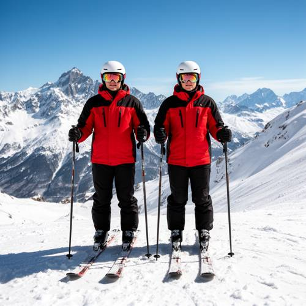

Action — Please generate a picture: Two skiers wearing the same style of ski cl
Please generate a picture: Two skiers wearing the same style of ski clothing, standing side by side on the top of a snowy mountain in exactly the same posture.


Judge — Direct
- PASSAction - State — The image shows two people on skis, both of whom are in an upright, standing position.
- FAILRelationship - Similarity — The two skiers wear jackets of the same style and color pattern, as well as black pants, helmets, and gloves. However, their postures are not exactly the same. Their head positions differ, with the skier on the left tilting their head slightly while the one on the right faces more forward. There are also slight variations in their hand and arm positions. Furthermore, their ski goggles have different colored lenses.
Judge — Continuum
- PASSAction - State — The image shows two figures on skis. They are both upright and stationary on a snowy surface, which corresponds to the state of standing.
- PASSRelationship - Similarity — The two skiers are wearing identical outfits, consisting of a red and black jacket, black pants, a white helmet, and ski goggles. They are also positioned in the same posture: standing front-on, holding ski poles in both hands with arms slightly bent, and their skis are parallel and pointing forward.
What the agent did
Thinking
Generate with flux2-dev.
Step 1 — `generate_image`
{
"prompt": "Two skiers standing side by side on the summit of a snowy mountain, both wearing identical ski outfits \u2014 matching red and black insulated ski jackets, black ski pants, white helmets, and mirrored goggles. They stand in exactly the same posture: upright, both hands holding ski poles planted at the same angle, skis parallel on the snow, facing the camera. Crisp sunny winter day, clear blue sky, dramatic alpine peaks and a vast snow-covered slope stretching behind them, sparkling white snow underfoot. Realistic photography style, full-body shot.",
"model": "flux2-dev"
}Result img_0
Thinking
The image looks quite good. Two skiers, matching outfits, same posture, snowy mountain top. Left skier appears slightly larger but postures match well — both holding poles, skis parallel. This meets the prompt. Mark best and stop.
Step 2 — `mark_best`
{
"image": "img_0",
"reason": "Matches the prompt: two skiers in identical red/black ski outfits, white helmets and goggles, standing side by side in the same posture (poles in both hands, parallel skis) on a snowy mountain summit with alpine peaks behind."
}Model
Here's your picture! It shows two skiers standing side by side on a snowy mountain summit, both wearing identical outfits — matching red and black ski jackets, black pants, white helmets, and mirrored goggles — and standing in the same posture: poles planted in both hands, skis parallel, facing the camera. Majestic snow-covered alpine peaks stretch out behind them under a clear blue sky. The image has been marked as the final result.